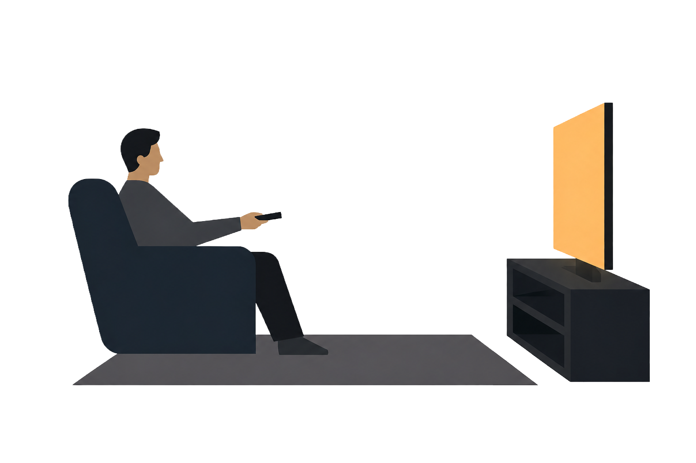

Your Cinematic Journey
MOVIES BY COUNTRY
{{ movie_map | safe }}{{ context.movie_context.favorite_day }}
{{ context.movie_context.favorite_genre }}
{{ context.movie_context.favorite_decade }}

Your ultimate movie-watching moment always happens on {{ context.movie_context.favorite_day }}s, making up {{ context.movie_context.movie_percentage }}% of your movie time and setting a stage where {{ context.movie_context.favorite_decade }} {{ context.movie_context.favorite_genre }} steals the show
Frequent themes on your silver screen
{{ movie_list("Movie Streak", context.streak_context.movies, "streak") }}
{% if context.streak_context.days > 1 %}
{% else %}
{% endif %}
{{ context.streak_context.days }}
days
0
Streaks
{% if context.streak_context.days > 1 %}
Longgest Streak
{{ context.streak_context.start }} to {{ context.streak_context.end }}
{% else %}Watch and rate evevry day to start a streak
{% endif %}